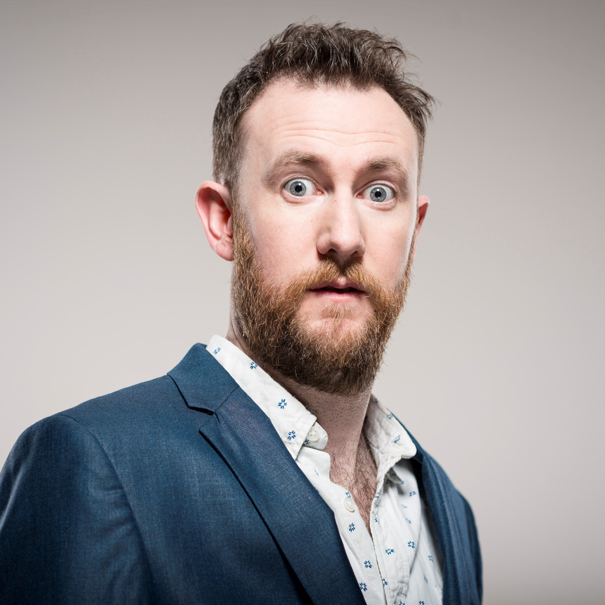

Taskmaster was initially conceptualized by British comedian Alex Horne, and first introduced to the public in 2010 at Edinburgh Festival Fringe, the world's largest performance arts festival. Horne sent a series of tasks to various comedians, and presented these to an audience. The next year, Horne had ten comedians try to complete tasks live onstage at Ediburgh Fringe. British channel Dave bought the rights to Horne's program idea. Greg Davies was added, and a pilot was released in 2014. Dave hosted the show from 2015 to 2019, when it was bought by Channel 4 in 2019, and has aired on Channel 4 since 2020.

×